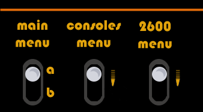
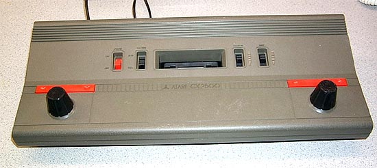
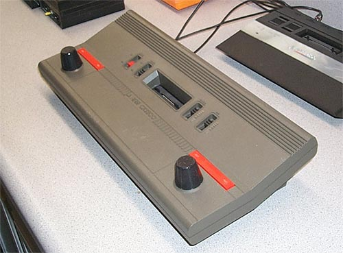
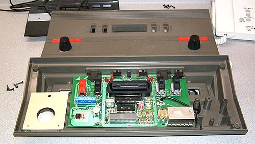

|

Atari Product Numbers-Feb 1, 1982
|
|
The Atari CX-2500

Now here's a real eye opener. Yet another unknown, undocumented
system. The unit is labelled "ATARI CX2500" and
from all appearances, it looks like a larger and perhaps earlier version
of the Atari CX-2000 "VAL" all-in-one system designed by Steve Mayer and
Gregg Squires at the WCI Atari New York Lab. However it was actually a Sunnyvale
response to the CX-2000 to show that a design could be done, just like the NY/WCI
LAB CX-2000 but using an off the shelf Atari 2600A motherboard in a much more
robust case design.

The
system contains all the basic features and functionality of a standard
Atari 2600 Video Computer System. The 4 switches are:
Power, B&W/Color, Select, and Reset. On the back
of the unit are two joystick ports, difficulty switches, channel select
and power input. What the unit sounds like is an Atari
2600A system. The joysticks are the exact same mechanical
units from the Atari 2700 "RC Stella" wireless controllers.
They are 8 position joysticks with 270 degree paddles. The
long red strips behind each joystick controller are firing buttons.

Now
it was time to see if the theory was correct by cracking open the case
and having a peak inside of the unit. Sure enough... an Atari
2600A motherboard inside of the case. This was obviously
a very early prototype as the controllers are mock-ups and have no contact
switches or connecting cables going to the Atari 2600A motherboard which
also has not been modified. The unit is built like
a tank to put it mildly and the controllers, once made live, would certainly
have performed well.
|
|